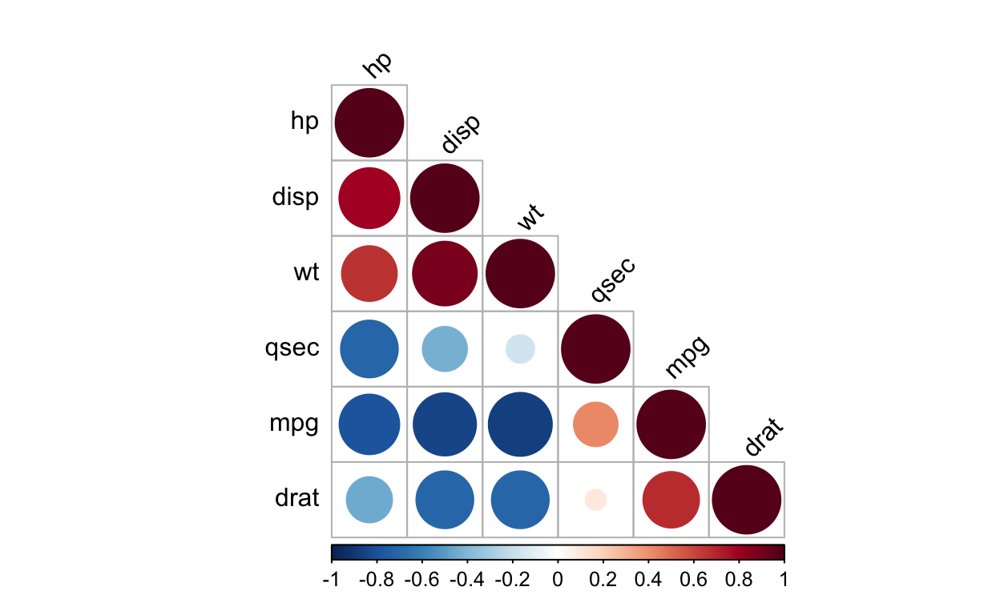
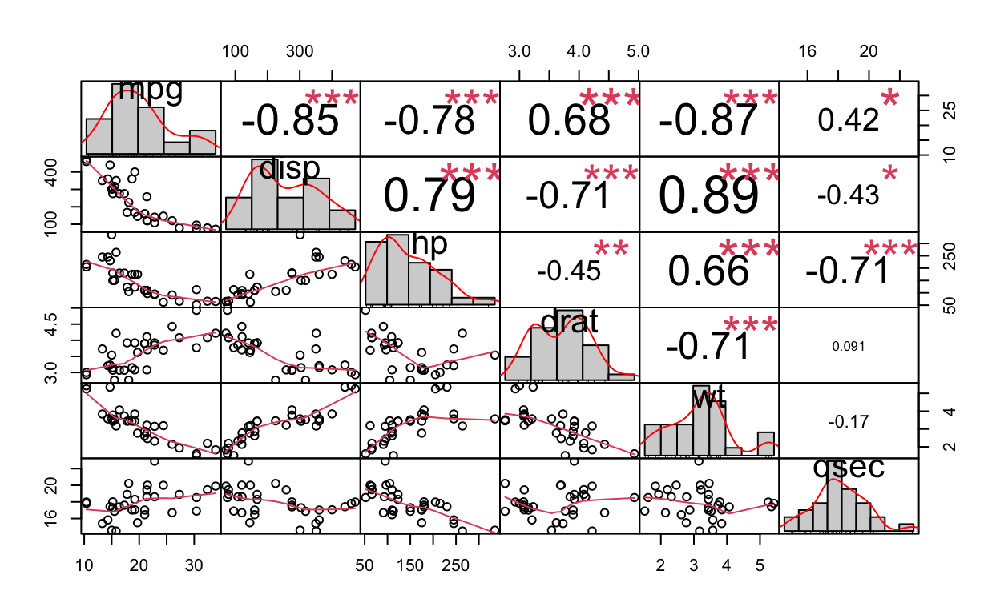
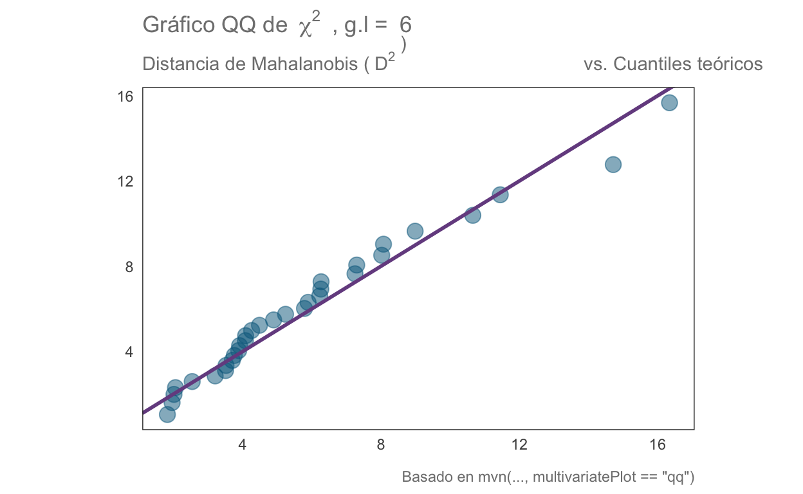
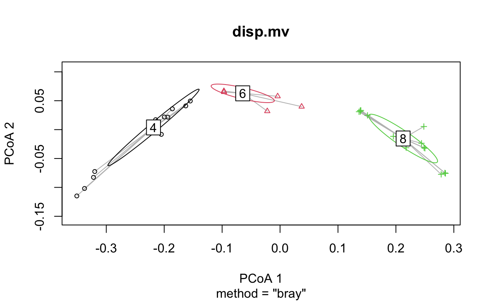
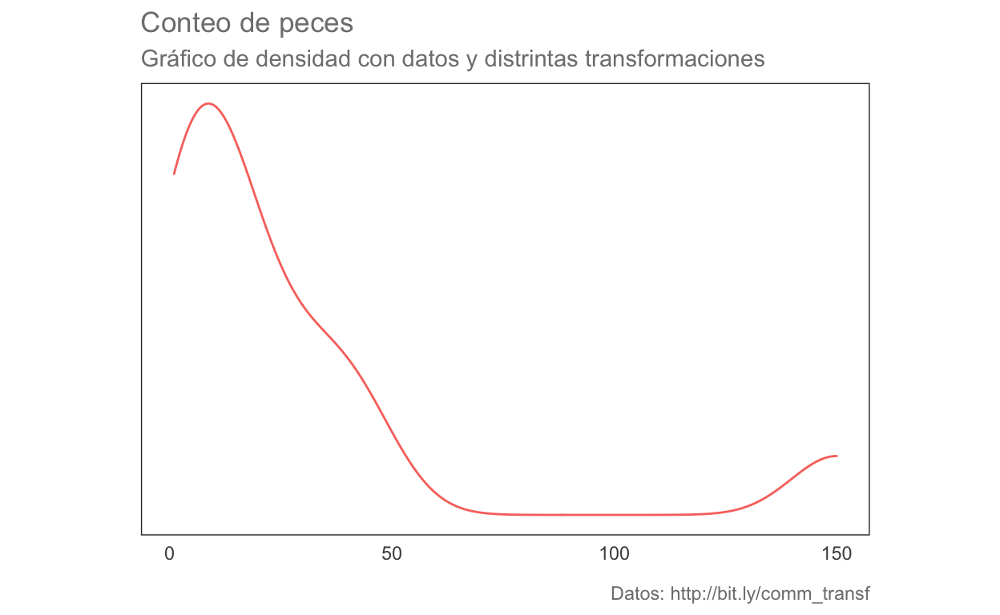
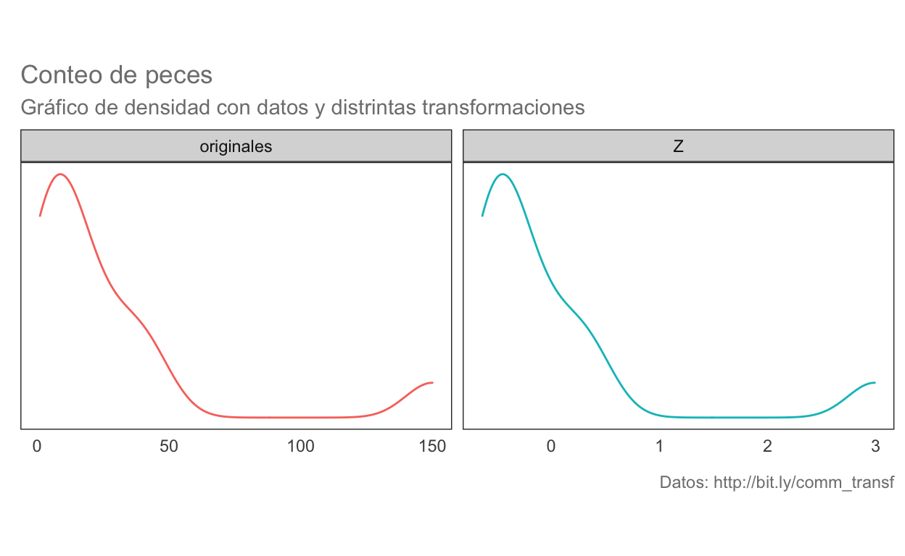
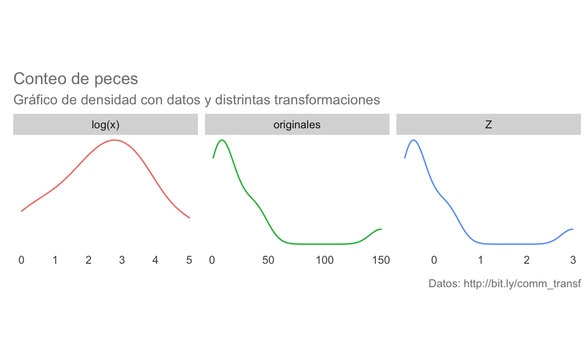
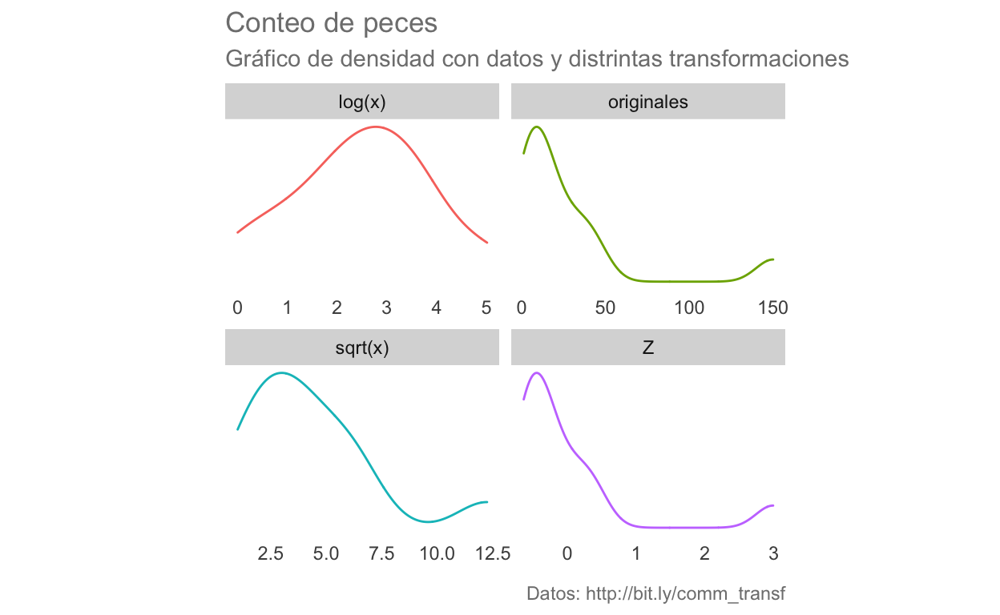

Matrices de correlación y covarianzas:
Para obtenerlas utilizaremos las mismas funciones que para el cálculo individual (y por consiguiente podremos calcular también la \(\rho\) de Spearman). Utilicemos como ejemplo la base de datos mtcars:
head(mtcars)
mpg cyl disp hp drat wt qsec vs am gear carb
Mazda RX4 21.0 6 160 110 3.90 2.620 16.46 0 1 4 4
Mazda RX4 Wag 21.0 6 160 110 3.90 2.875 17.02 0 1 4 4
Datsun 710 22.8 4 108 93 3.85 2.320 18.61 1 1 4 1
Hornet 4 Drive 21.4 6 258 110 3.08 3.215 19.44 1 0 3 1
Hornet Sportabout 18.7 8 360 175 3.15 3.440 17.02 0 0 3 2
Valiant 18.1 6 225 105 2.76 3.460 20.22 1 0 3 1Ahora estimemos ambas matrices:
# Matriz de covarianzas
cov.mat <- cov(mtcars)
# Matriz de correlación
cor.mat <- cor(mtcars)
# Las imprimimos en pantalla
cov.mat
mpg cyl disp hp drat wt
mpg 36.324103 -9.1723790 -633.09721 -320.732056 2.19506351 -5.1166847
cyl -9.172379 3.1895161 199.66028 101.931452 -0.66836694 1.3673710
disp -633.097208 199.6602823 15360.79983 6721.158669 -47.06401915 107.6842040
hp -320.732056 101.9314516 6721.15867 4700.866935 -16.45110887 44.1926613
drat 2.195064 -0.6683669 -47.06402 -16.451109 0.28588135 -0.3727207
wt -5.116685 1.3673710 107.68420 44.192661 -0.37272073 0.9573790
qsec 4.509149 -1.8868548 -96.05168 -86.770081 0.08714073 -0.3054816
vs 2.017137 -0.7298387 -44.37762 -24.987903 0.11864919 -0.2736613
am 1.803931 -0.4657258 -36.56401 -8.320565 0.19015121 -0.3381048
gear 2.135685 -0.6491935 -50.80262 -6.358871 0.27598790 -0.4210806
carb -5.363105 1.5201613 79.06875 83.036290 -0.07840726 0.6757903
qsec vs am gear carb
mpg 4.50914919 2.01713710 1.80393145 2.1356855 -5.36310484
cyl -1.88685484 -0.72983871 -0.46572581 -0.6491935 1.52016129
disp -96.05168145 -44.37762097 -36.56401210 -50.8026210 79.06875000
hp -86.77008065 -24.98790323 -8.32056452 -6.3588710 83.03629032
drat 0.08714073 0.11864919 0.19015121 0.2759879 -0.07840726
wt -0.30548161 -0.27366129 -0.33810484 -0.4210806 0.67579032
qsec 3.19316613 0.67056452 -0.20495968 -0.2804032 -1.89411290
vs 0.67056452 0.25403226 0.04233871 0.0766129 -0.46370968
am -0.20495968 0.04233871 0.24899194 0.2923387 0.04637097
gear -0.28040323 0.07661290 0.29233871 0.5443548 0.32661290
carb -1.89411290 -0.46370968 0.04637097 0.3266129 2.60887097cor.mat
mpg cyl disp hp drat wt
mpg 1.0000000 -0.8521620 -0.8475514 -0.7761684 0.68117191 -0.8676594
cyl -0.8521620 1.0000000 0.9020329 0.8324475 -0.69993811 0.7824958
disp -0.8475514 0.9020329 1.0000000 0.7909486 -0.71021393 0.8879799
hp -0.7761684 0.8324475 0.7909486 1.0000000 -0.44875912 0.6587479
drat 0.6811719 -0.6999381 -0.7102139 -0.4487591 1.00000000 -0.7124406
wt -0.8676594 0.7824958 0.8879799 0.6587479 -0.71244065 1.0000000
qsec 0.4186840 -0.5912421 -0.4336979 -0.7082234 0.09120476 -0.1747159
vs 0.6640389 -0.8108118 -0.7104159 -0.7230967 0.44027846 -0.5549157
am 0.5998324 -0.5226070 -0.5912270 -0.2432043 0.71271113 -0.6924953
gear 0.4802848 -0.4926866 -0.5555692 -0.1257043 0.69961013 -0.5832870
carb -0.5509251 0.5269883 0.3949769 0.7498125 -0.09078980 0.4276059
qsec vs am gear carb
mpg 0.41868403 0.6640389 0.59983243 0.4802848 -0.55092507
cyl -0.59124207 -0.8108118 -0.52260705 -0.4926866 0.52698829
disp -0.43369788 -0.7104159 -0.59122704 -0.5555692 0.39497686
hp -0.70822339 -0.7230967 -0.24320426 -0.1257043 0.74981247
drat 0.09120476 0.4402785 0.71271113 0.6996101 -0.09078980
wt -0.17471588 -0.5549157 -0.69249526 -0.5832870 0.42760594
qsec 1.00000000 0.7445354 -0.22986086 -0.2126822 -0.65624923
vs 0.74453544 1.0000000 0.16834512 0.2060233 -0.56960714
am -0.22986086 0.1683451 1.00000000 0.7940588 0.05753435
gear -0.21268223 0.2060233 0.79405876 1.0000000 0.27407284
carb -0.65624923 -0.5696071 0.05753435 0.2740728 1.00000000Veámos la matriz de correlaciones gráficamente:
Ahora utilicemos una función que, en un solo paso, computará la matriz de correlación, realizará una prueba de significancia para cada una y además nos presentará la matriz de manera gráfica:
# Descarga la función desde esa url y la carga en memoria
source("http://www.sthda.com/upload/rquery_cormat.r")
# Para fines prácticos se extrae un subconjunto de las columnas
mydata <- mtcars[, c(1,3,4,5,6,7)]
# Se aplica la función
rquery.cormat(mydata)

$r
hp disp wt qsec mpg drat
hp 1
disp 0.79 1
wt 0.66 0.89 1
qsec -0.71 -0.43 -0.17 1
mpg -0.78 -0.85 -0.87 0.42 1
drat -0.45 -0.71 -0.71 0.091 0.68 1
$p
hp disp wt qsec mpg drat
hp 0
disp 7.1e-08 0
wt 4.1e-05 1.2e-11 0
qsec 5.8e-06 0.013 0.34 0
mpg 1.8e-07 9.4e-10 1.3e-10 0.017 0
drat 0.01 5.3e-06 4.8e-06 0.62 1.8e-05 0
$sym
hp disp wt qsec mpg drat
hp 1
disp , 1
wt , + 1
qsec , . 1
mpg , + + . 1
drat . , , , 1
attr(,"legend")
[1] 0 ' ' 0.3 '.' 0.6 ',' 0.8 '+' 0.9 '*' 0.95 'B' 1Otra alternativa es utilizar la función chart.Correlation(data, histogram) de la librería PerformanceAnalytics, en la cual se muestran todos resultados en una misma gráfica:
library(PerformanceAnalytics)
chart.Correlation(mydata, histogram = T, pch = 19)

Un comentario final al respecto de estas matrices es que, además de ser la base de las técnicas multivariadas, nos permiten evaluar la asociación entre nuestras variables sin comprometer un modelo predictivo, a la vez que nos permitirán hacer un filtrado de nuestras variables para evitar autocorrelaciones o incluir variables poco informativas, aunque de esto hablaremos más adelante.
Normalidad multivariada
Para analizar si nuestros datos multivariados se ajustan a una distribución normal multivariada utilizaremos la librería MVN, cuya función mvn(data, mvnTest, multivariatePlot) nos permite realizar una serie de pruebas tanto multi como univariadas:
Prueba de Mardia (1970)
Consiste en analizar si los momentos de la distribución Mv de los datos difieren de los esperados de una distribución Normal Mv (Mardia 1970), las hipótesis nulas son:
- \(H_0: S_{obs} = S_{NMv_{µ, \Sigma}}\)
- \(H_0: K_{obs} = K_{NMv_{µ, \Sigma}}\)
Donde \(\mu\) representa el vector de medias de cada variable y \(\Sigma\) la matriz de covarianzas.
Al realizar esta prueba vemos que la distribución Mv observada tiene una curtosis adecuada, aunque se encuentra fuertemente sesgada. Si analizamos los datos univariados vemos que en apariencia 2/6 variables presentan normalidad univariada.
library(MVN)
mvntest <- mvn(mydata, mvnTest = "mardia")
mardia.test <- mvntest$multivariateNormality
unitest <- mvntest$univariateNormality
mardia.test
Test Statistic p value Result
1 Mardia Skewness 77.6519454787057 0.0293424460277968 NO
2 Mardia Kurtosis 0.241701622075929 0.80901137258975 YES
3 MVN <NA> <NA> NOunitest
Test Variable Statistic p value Normality
1 Shapiro-Wilk mpg 0.9476 0.1229 YES
2 Shapiro-Wilk disp 0.9200 0.0208 NO
3 Shapiro-Wilk hp 0.9334 0.0488 NO
4 Shapiro-Wilk drat 0.9459 0.1101 YES
5 Shapiro-Wilk wt 0.9433 0.0927 YES
6 Shapiro-Wilk qsec 0.9733 0.5935 YES Prueba de Henze-Zirkler
Si observamos con atención los valores de p, veremos que hay algunos que se encuentran cercanos al umbral de 0.05 por lo que un análisis a partir de los cuantiles de la distribución puede ser una alternativa más informativa. Para ello podemos utilizar la prueba de Henze-Zirkler. Esta prueba considera una hipótesis compuesta, en la cual la distribución de X es una distribución normal no degenerada, cuyos resultados son consistentes contra cualquier distribución alternativa no normal (por ello compuesta). La representación está dada en términos de \(L^2\) (Distancia de Mahalanobis, más adelante hablaremos sobre medidas de distancia). Al ser una prueba de bondad de ajuste (observado vs. esperado), el estadístico de prueba sigue una distribución \(\chi^2\) (Henze y Zirkler 2007).
Aplicandola conmvn() vemos que también sugiere una falta de normalidad, lo cual podemos comprobar al ver el gráfico Cuantil-Cuantil
hz.test <- mvn(mydata, mvnTest = "hz",
multivariatePlot = "qq")$multivariateNormality
hz.test
Test HZ p value MVN
1 Henze-Zirkler 1.046162 0.001459679 NOEse gráfico, aunque informativo, puede trabajarse para hacerse más agradable a la vista utilizando ggplot2 utilizando la siguiente función personalizada creada a partir del código utilizado para la gráfica anterior:
# Funciones personalizadas:
# Extraida de la función mvn(multivariatePlot = "qq") para un gráfico QQ
# para normalidad multivariada utilizando la distancia de mahalanobis
ji2.plot <- function(df){
# Datos
n <- dim(mydata)[1] # número de datos
p <- dim(mydata)[2] # número de grupos
# Centramos los datos (a-µ(a)) sin escalarlos (sin dividir por su \sigma)
dif <- scale(mydata, scale = F)
# Cálculo de la distancia de mahalanobis^2
d <- diag(dif %*% solve(cov(mydata), tol = 1e-25) %*% t(dif))
r <- rank(d) # Asignación de rangos a las distancias
# Obtención de los cuantiles teóricos según la distribución ji^2
ji2 <- qchisq((r - 0.5)/n, p)
# Reunimos los objetos en un data.frame para graficar con ggplot2
ji2.plot.data <- data.frame(d, ji2)
# Graficado
library(ggplot2)
ji2.qq <- ggplot(data = ji2.plot.data, aes(x = d, y = ji2)) +
geom_point(colour = "deepskyblue4", alpha = 0.5, size = 4) +
geom_abline(slope = 1,
colour = rgb(118,78,144,
maxColorValue = 255),
size = 1) +
labs(title =
bquote("Gráfico QQ de" ~~ {chi^2} ~~ ", g.l = "~ .(p)),
subtitle = bquote("Distancia de Mahalanobis ("~{D^2}~")
vs. Cuantiles teóricos"),
x = element_blank(),
y = element_blank(),
caption = "Basado en mvn(..., multivariatePlot == \"qq\")"
)
return(ji2.qq)
}
# Tema personalizado
blank_theme <- function(){
theme(panel.grid.minor = element_blank(),
panel.grid.major = element_blank(),
panel.background = element_blank(),
axis.line = element_blank(),
aspect.ratio = 1/1.61,
axis.ticks = element_blank(),
text = element_text(colour = "gray50"),
legend.position = "none"
)
}
qqjiplot <- ji2.plot(mydata) + blank_theme()
qqjiplot

Prueba de Royston
Esta prueba es una extensión multivariada de la prueba por excelencia para la normalidad univariada: la prueba de Shapiro-Wilk’s. Originalmente propuesta en 1983, aunque fue corregida/ampliada por el mismo autor en 1992 (Royston vs. otras). Funciona mejor para muestras pequeñas, aunque no se recomienda emplearla con menos de 3 observaciones o con más de 2000.
Su implementación sigue la misma línea que los casos anteriores. Si analizamos el valor de p, veremos que se encuentra en el límite de la significancia a un \(\alpha = 0.05\); sin embargo, si consideramos también el gráfico QQ que elaboramos anteriormente, no podemos asumir que esas desviaciones sean despreciables.
royston.test <- mvn(mydata, mvnTest = "royston")$multivariateNormality
royston.test
Test H p value MVN
1 Royston 6.680718 0.04965041 NOIgualdad de dispersiones multivariadas
Conforme vayamos avanzando en el curso veremos que, entre los supuestos de algunas pruebas, vamos a encontrar el de “igualdad de dispersiones multivariadas”; i.e., igualdad de matrices de covarianza. Una alternativa es utilizar la prueba de Anderson (2006), la cual es un análogo multivariado a la prueba de Levene para la homogeneidad de varianzas. La prueba de hipótesis está basada en distancias no euclidianas entre los grupos (i.e., no utiliza el teorema de Pitágoras :( ). Un dato curioso es que este método también se ha utilizado para evaluar la diversidad \(\beta\) de una comunidad.
Para su implementación en R utilizaremos la función betadisper de la librería vegan. Al ser un método basado en distancias, primero habrá que transformar los datos a una matriz de distancias utilizando alguna de las funciones dist, betadiver o vegdist. Necesitamos, además, establecer los grupos a utilizar.
library(vegan)
dist.mat <- vegdist(mydata, method = "bray", type = c("median"))
groups <- as.character(mtcars$cyl)
# Por fines prácticos no se muestra,
# ya que calcula una distancia entre cada par de instancias o grupos,
# resultando en matrices sumamente grandes
#dist.mat
Ahora utilizaremos la función betadisper para comprobar la homogeneidad de dispersiones entre los distintos cilindros. Esta prueba únicamente genera el espacio multivariado para realizar la prueba, realizando un ACP para reducir la dimensionalidad de la base de datos y estimar las distancias a la mediana de cada uno de los grupos establecidos.
# Realizar el procedimiento
disp.mv <- betadisper(dist.mat,
group = groups, type = "median")
disp.mv
Homogeneity of multivariate dispersions
Call: betadisper(d = dist.mat, group = groups, type = "median")
No. of Positive Eigenvalues: 18
No. of Negative Eigenvalues: 13
Average distance to median:
4 6 8
0.09587 0.06171 0.08251
Eigenvalues for PCoA axes:
(Showing 8 of 31 eigenvalues)
PCoA1 PCoA2 PCoA3 PCoA4 PCoA5 PCoA6 PCoA7 PCoA8
1.392690 0.091453 0.040689 0.037914 0.025951 0.009016 0.007642 0.004007 Si realizamos la prueba de hipótesis vemos que, al parecer, las dispersiones multiviariadas son similares entre los 3 grupos.
# Prueba de hipótesis
anova(disp.mv)
Analysis of Variance Table
Response: Distances
Df Sum Sq Mean Sq F value Pr(>F)
Groups 2 0.004992 0.0024958 1.2387 0.3046
Residuals 29 0.058429 0.0020148 Ahora veamos las dispersiones gráficamente:
# Análisis gráfico
plot(disp.mv, ellipse = T, hull = F)

Al analizar el gráfico vemos que las dispersiones son similares; sin embargo, pareciera que la dispersión del grupo 6 es más pequeña que la de los grupos 4 y 8, en tonces realicemos las comparaciones pareadas univariadas con la prueba Honesta de Diferencias Significativas de Tukey (TukeyHSD). Los resultados sugieren que las dispersiones con un \(\alpha = 0.05\) son similares, lo cual a su vez pudiera sugerir que hay un equilibrio entre las dispersiones en el eje x con respecto a las dispersiones en el eje y.
mod.HSD <- TukeyHSD(disp.mv)
mod.HSD <- data.frame(mod.HSD$group, comp = dimnames(mod.HSD$group)[[1]])
mod.HSD
diff lwr upr p.adj comp
6-4 -0.03415902 -0.08775592 0.01943787 0.2727664 6-4
8-4 -0.01335766 -0.05802174 0.03130642 0.7427965 8-4
8-6 0.02080137 -0.03051376 0.07211649 0.5820846 8-6Al igual que en el caso anterior podemos utilizar ggplot para personalizar el gráfico:
hsd.plot <- ggplot(data = mod.HSD,
aes(x = comp)) +
geom_point(aes(y = diff),
colour = "deepskyblue4",
size = 4,
alpha = 0.7)+
geom_errorbar(aes(ymin = lwr, ymax = upr),
colour = "deepskyblue4") +
blank_theme() +
labs(title = "Diferencias en dispersión multivariada e IC",
subtitle = "Prueba HSD de Tukey",
x = "Grupos",
y = element_blank()) +
scale_y_continuous(breaks = NULL) +
geom_hline(yintercept = 0,
colour = rgb(118,78,144, maxColorValue = 255),
linetype = "dashed") +
annotate("text",
x = 0.5, y = 0+0.005,
label = as.character(0),
colour = rgb(118,78,144, maxColorValue = 255)
) +
geom_hline(yintercept = max(mod.HSD$upr),
colour = "firebrick", alpha = 0.7,
linetype = "dashed") +
annotate("text",
x = 0.5, y = max(mod.HSD$upr)-0.005,
label = as.character(round(max(mod.HSD$upr),2)),
colour = "firebrick"
) +
geom_hline(yintercept = min(mod.HSD$lwr),
colour = "firebrick", alpha = 0.7,
linetype = "dashed") +
annotate("text",
x = 0.5, y = min(mod.HSD$lwr)-0.005,
label = as.character(round(min(mod.HSD$lwr),2)),
colour = "firebrick"
) +
geom_text(aes(label = paste("p = ", round(p.adj,2)), y = 0),
stat = "identity",
nudge_y = max(mod.HSD$upr)+0.005, colour = "gray50")
hsd.plot

Implicaciones analíticas de la multidimensionalidad
Es importante mencionar que entre más incrementemos la dimensionalidad de nuestro problema más difícil será resumir en un solo resultado las pruebas de nuestros análisis y, en consecuencia, deberemos de considerar distintas técnicas/estrategias que analicen nuestros datos desde distintas perspectivas antes de emitir un juicio o extraer conclusiones. Por esta razón, es sumamente importante que realicemos una selección de variables de manera rigurosa antes de comenzar nuestro análisis, ya que incluir variables innecesariamente únicamente incrementará la varianza de los datos sin aportarnos ninguna información adicional, causando desviaciones de la normalidad, modelos complejos sobre o infra ajustados y pérdidas de poder estadístico.
En cuanto a la normalidad, hay un par de consideraciones a tener en cuenta. La primera es que si nuestro análisis está basado en la matriz de correlación estaremos cumpliendo el supuesto de normalidad de la técnica que estemos aplicando (de tenerlo), ya que, explícitamente ajustamos los datos a una distribución normal. Por otra parte, es importante mencionar que si nuestros datos en realidad no se ajustan o se encuentran fuertemente desviados de la normalidad, las conclusiones que extraigamos serán únicamente sobre la tendencia más general de nuestros datos (Revisar: desigualdad/teorema de Chebyshev) y, en consecuencia, pueden no ser una representación completa de nuestras muestras. Si esto es importante o no, dependerá de nuesta pregunta de investigación y qué tan fino querramos que sea el análisis.
Transformaciones o deformaciones
Habiendo tocado el tema de la estandarización, hablemos también del resto de transformaciones. En general, podemos considerar que existen dos tipos de transformaciones: 1. Aquellas que afectan la distribución de los datos (logarítmica) 2. Aquellas que simplemente cambian los límites de la distribución original (MinMax)
¿Cuál utilizar? Dependerá de nuestros objetivos para hacerla, lo cual me lleva al punto de que: NINGUNA transformación debe de ser aplicada sin cuidado. Hay que tener en cuenta que aunque no se cambie la distribución de los datos, el análisis ya no se realiza sobre los datos originales, lo cual puede causar errores de interpretación. Con esto no quiero decir que las transformaciones sean malas, solo que hay que emplearlas con una justificación y asegurarnos de re-transformar los datos antes de hacer inferencias.
Veamos algunas de las transformaciones más comunes y cuáles son sus consecuencias en los datos. Para ello, consideremos estos datos sin transformar. Vemos que están altamente sesgados y en consecuencia bastante alejados de la normalidad:
# Función de graficado
kdeplots <- function(data, aes){
kdeplots <- ggplot(data, aes) +
geom_density() +
blank_theme() +
labs(title = "Conteo de peces",
subtitle =
"Gráfico de densidad con datos y distrintas transformaciones",
caption = "Datos: http://bit.ly/comm_transf",
x = element_blank(),
y = element_blank()) +
scale_y_continuous(breaks = NULL)
return(kdeplots)
}
df <- data.frame(datos = c(38, 1, 13, 2, 13, 20, 150, 9, 28, 6, 4, 43),
transf = "originales")
kde.plots <- kdeplots(df, aes(datos, color = transf))
kde.plots

Estandarización
Veamos el efecto de estandarizar los datos; es decir, utilizar la distribución Z. El resultado es la misma distribución, aunque los datos ahora se encuentran escalados en el intervalo [-3,3] indicando a cuantas SD de la media se encuentra cada punto.
df2 <- rbind(df, data.frame(datos = (df$datos-mean(df$datos))/sd(df$datos),
transf = "Z"))
kde.plots <- kdeplots(df2, aes(datos, color = transf)) +
facet_wrap(~transf, scales = "free")
kde.plots

Transformación logarítmica:
Posiblemente la transformación más conocida, utilizada y, en consecuencia, abusada.Se realiza aplicando la ecuación \(X_{log} = log_n(X)\). (OJO: si hay ceros será \(X_{log} = log_n(X+1)\), ya que el logaritmo de 0 no existe). Veamos qué le pasa a la distribución al aplicarla. La distribución cambió notablemente, ahora se encuentra mucho más cerca de una forma de campana. ¿Cuándo aplicarla? Cuando querramos forzar nuestros datos a una distribución normal para cumplir con los supuestos de alguna prueba paramétrica, linealizar los datos y, equivocadamente, ponerlos en la misma escala que otra variable. Con excepción del último caso, cualquiera de las formas está matemáticamente justificada, solo hay que tener en consideración que los datos no son los originales y que pueden no representar adecuadamente nuestro muestreo. Otro caso en el cual es válido utilizarlo es si queremos ver cuál es cuando tenemos distintos factores y nuestra variable de respuesta es el resultado de su interacción (producto) tal que \(Y = a \times b \times c \times d\times ... \times z\) (efecto multiplicativo y no aditivo), ya que el resultado es una distribución con forma log-normal que no es posible capturar con los datos originales. Su re-transformación es \(n^{X_{log}}\). Salvo en el último caso, recomiendo contrastar los resultados con una prueba no paramétrica utilizando los datos originales y ver cuáles son las diferencias.
df2 <- rbind(df2, data.frame(datos = log(df$datos), transf = "log(x)"))
kde.plots <- kdeplots(df2, aes(datos, color = transf)) +
facet_wrap(~transf, scales = "free")
kde.plots

Raíz cuadrada
Otra transformación muy empleada, consiste en en obtener la raíz cuadrada de cada uno de los datos (\(\sqrt{X}\), OJO: si hay valores negativos no se puede utilizar, hay que pasarlos a valores absolutos o añadir una constante para volverlos positivos). Veamos su efecto en la distribución. En este caso el cambio en la forma no es tan agresivo, y la consecuencia es únicamente que las diferencias entre los valores más altos y los más pequeños se redujo. Su re-transformación es: \(\sqrt{x}^2\). Su uso más común es con datos de conteo (abundancias, bacterias en una caja petri, etc.)
df2 <- rbind(df2, data.frame(datos = sqrt(df$datos), transf = "sqrt(x)"))
kde.plots <- kdeplots(df2, aes(datos, color = transf)) +
facet_wrap(~transf, scales = "free")
kde.plots
